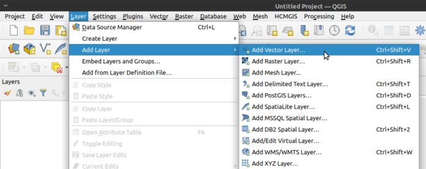

QGIS: Thematic Mapping with Open Source GIS¶
date: 2014-05-16
QGIS is a mature open source GIS package that I have been using to produce high quality thematic maps for my PhD. It is similar to proprietary packages like ArcMap but is, in my opinion, superior for the following reasons:
I’ve found QGIS less prone to crashes, particularly when handling large files (> ~100MB).
I think the QGIS interface makes it easier to understand what layers you’re currently working with and have available.
Most importantly, QGIS is freely available and has no cost to download, making it possible for any individual to easily open, replicate and check your analysis.
Obtaining QGIS¶
QGIS is available from http://www.qgis.org/en/site/forusers/download.html
Windows users need to download just one .exe file. Ubuntu users can install with their package manager by following the instructions here: http://www.qgis.org/en/site/forusers/alldownloads.html#ubuntu (other distributions have similar instructions). Mac OS X users have the hardest time. If you’re looking to install on Mac you need to download and install the following packages, in order, from http://www.kyngchaos.com/software/qgis:
Finally, QGIS itself.
Thematic Mapping with QGIS¶
Perhaps the most common function of GIS software, particularly in the social sciences, is to produce thematic maps. This involves the following steps:
Load the outline of the geographical area of interest.
Load data about the areas about a topic of interest.
‘Join’ the data to the boundary information using a unique key in both files.
Set the shading of the map based on the joined dataset.
This is easily achieved in QGIS.
Load a Vector (Map) Layer¶
I use shapefiles as these appear to be the de facto standard among GIS applications. Load a shapefile with SHIFT+CTRL+V or by clicking the ‘Add Vector Layer’ icon (bottom left of this screenshot, looks like a ‘V’):

Add vector layer¶
Add Data¶
To add data about the geography you’ve loaded – and join it to the shapefile – click ‘Add Delimited Text Layer’ (icon looks like a comma). I’m assuming here you’re using a text delimited file (probably comma delimited, like .csv) because this is the most common format data is shared in, or at least can be easily converted to. Other data formats are supported, but for now lets load a .csv:
` <https://i0.wp.com/philmikejones.me/wp-content/uploads/2014/05/add-csv-layer.png>`__
{kind=link}
QGIS: Add CSV Layer
You should get the following dialogue box:
` <https://i0.wp.com/philmikejones.me/wp-content/uploads/2014/05/csv-dialogue.png>`__
{kind=link}
QGIS: Load CSV File
The main thing to remember when loading a .csv file is to tell QGIS if your file contains geometry data or not. Most of the time when I download .csv files relating to a geography (like LSOA) it contains the LSOA code for referencing, but the file doesn’t include any geometry data per se. I would therefore select ‘No geometry (attribute only table)’ from the dialogue box.
‘Joining’ the Two¶
Once the data is loaded, it’s time to ‘join’ it to the shapefile or other layer we loaded earlier. Right-click on the layer and press ‘Properties’:
` <https://i0.wp.com/philmikejones.me/wp-content/uploads/2014/05/join.png>`__
{kind=link}
QGIS: Joining a csv file to a layer
From there, select Joins, then the green plus:
` <https://i0.wp.com/philmikejones.me/wp-content/uploads/2014/05/join-dialogue.png>`__
{kind=link}
QGIS: Joins dialogue
Select your csv file (‘Join layer’), the unique code you’re using to join, which is probably an LSOA code or similar (‘Join field’), and the target field in your vector layer. Like a key in a relational database, the codes for the join field and target layer must match exactly, or QGIS won’t know which area’s which!
Thematic Mapping¶
Once the join is completed you can create a thematic map by modifying the ‘Style’ tab of the layer properties. I typically change ‘Single Symbol’ to ‘Graduated’ and selecting an appropriate colour gradient:
` <https://i0.wp.com/philmikejones.me/wp-content/uploads/2014/05/thematic-map-from-join.png>`__
{kind=link}
QGIS: Applying styles to layer
The finished result should look something like this. If you want to reproduce this map you can obtain the Townsend Scores and shapefile map layer.
` <http://philmikejones.me/wp-content/uploads/2014/05/sheffield-townsend-2011.pdf>`__
Sheffield Townsend Deprivation Scores 2011 – darker areas are more deprived
Sources¶
The csv data is based on my analysis of the 2011 Census. The boundary data was obtained from the UK Data Service:
Office for National Statistics, 2011 Census: Aggregate data (England and Wales) [computer file]. UK Data Service Census Support. Downloaded from: http://infuse.mimas.ac.uk. This information is licensed under the terms of the Open Government Licence [http://www.nationalarchives.gov.uk/doc/open-government-licence/version/2].
Office for National Statistics, 2011 Census: Digitised Boundary Data (England and Wales) [computer file]. UK Data Service Census Support. Downloaded from: http://edina.ac.uk/census